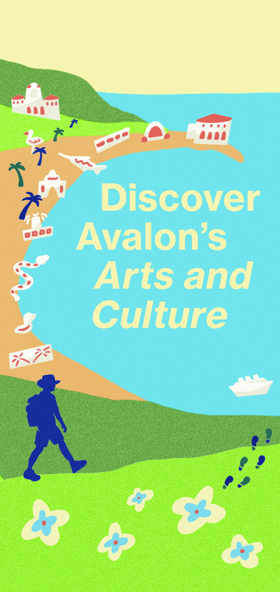
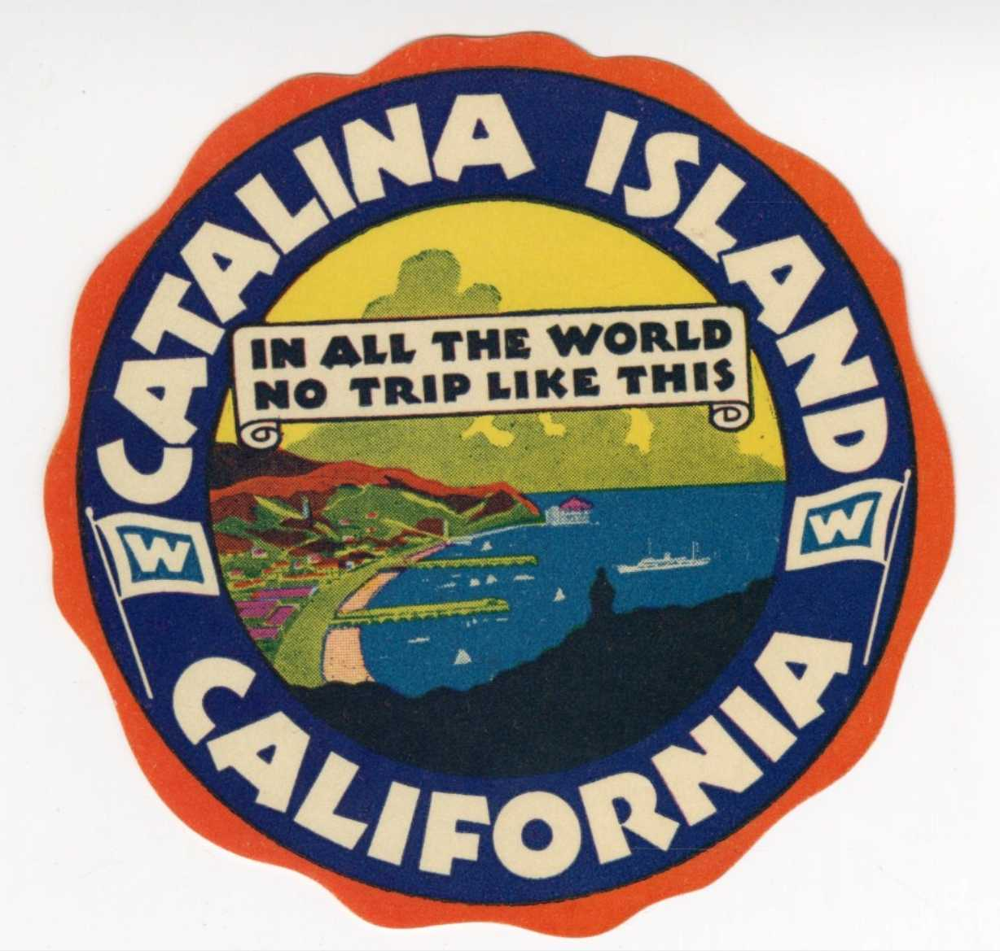

Coordinated by the Catalina Museum for Art & History
Begin the Tour
We'll ask for location access so stops can play automatically as you approach. You can also just tap markers on the map instead.
Before We Wander
Tap play to begin

Santa Catalina's travel sticker designed by Otis Shepard
Continue to Map →
Avalon Walking Tour
Explore Arts and Culture
Recenter
Visit the Museum ↗
Progress
0 / 11 stops
Finding your location…
Location access is off — tap a numbered pin to open its audio guide.
Site name
Tap play
Mark as Explored
Back to Map
Fair Winds
Tap play to begin
Find the Secret Stops
Replay the Tour